07/31/2024
Last updated: 2024-08-15
Checks: 5 2
Knit directory: Collaborations/
This reproducible R Markdown analysis was created with workflowr (version 1.7.1). The Checks tab describes the reproducibility checks that were applied when the results were created. The Past versions tab lists the development history.
The R Markdown file has unstaged changes. To know which version of
the R Markdown file created these results, you’ll want to first commit
it to the Git repo. If you’re still working on the analysis, you can
ignore this warning. When you’re finished, you can run
wflow_publish to commit the R Markdown file and build the
HTML.
Great job! The global environment was empty. Objects defined in the global environment can affect the analysis in your R Markdown file in unknown ways. For reproduciblity it’s best to always run the code in an empty environment.
The command set.seed(20210523) was run prior to running
the code in the R Markdown file. Setting a seed ensures that any results
that rely on randomness, e.g. subsampling or permutations, are
reproducible.
Great job! Recording the operating system, R version, and package versions is critical for reproducibility.
Nice! There were no cached chunks for this analysis, so you can be confident that you successfully produced the results during this run.
Using absolute paths to the files within your workflowr project makes it difficult for you and others to run your code on a different machine. Change the absolute path(s) below to the suggested relative path(s) to make your code more reproducible.
| absolute | relative |
|---|---|
| C:/Shengtong/Research/AllCollaboration/Collaborations/analysis/Rfunctions.R | analysis/Rfunctions.R |
Great! You are using Git for version control. Tracking code development and connecting the code version to the results is critical for reproducibility.
The results in this page were generated with repository version 6f9829a. See the Past versions tab to see a history of the changes made to the R Markdown and HTML files.
Note that you need to be careful to ensure that all relevant files for
the analysis have been committed to Git prior to generating the results
(you can use wflow_publish or
wflow_git_commit). workflowr only checks the R Markdown
file, but you know if there are other scripts or data files that it
depends on. Below is the status of the Git repository when the results
were generated:
Ignored files:
Ignored: .Rhistory
Ignored: analysis/.Rhistory
Ignored: analysis/2022_Mar2_Marinho_cache/
Unstaged changes:
Modified: analysis/2024_0701_survey.Rmd
Note that any generated files, e.g. HTML, png, CSS, etc., are not included in this status report because it is ok for generated content to have uncommitted changes.
These are the previous versions of the repository in which changes were
made to the R Markdown (analysis/2024_0701_survey.Rmd) and
HTML (docs/2024_0701_survey.html) files. If you’ve
configured a remote Git repository (see ?wflow_git_remote),
click on the hyperlinks in the table below to view the files as they
were in that past version.
| File | Version | Author | Date | Message |
|---|---|---|---|---|
| Rmd | 6f9829a | han | 2024-08-15 | 8/15/2024 |
| html | 6f9829a | han | 2024-08-15 | 8/15/2024 |
| Rmd | fe7fa75 | han | 2024-08-14 | 8/14/2024 |
| html | fe7fa75 | han | 2024-08-14 | 8/14/2024 |
| Rmd | e33c9bf | han | 2024-08-14 | 8/14/2024 |
| html | e33c9bf | han | 2024-08-14 | 8/14/2024 |
| Rmd | cf8aba6 | han | 2024-08-12 | 8/12/2024 |
| html | cf8aba6 | han | 2024-08-12 | 8/12/2024 |
| Rmd | 6700b1d | han | 2024-08-12 | 8/12/2024 |
| html | 6700b1d | han | 2024-08-12 | 8/12/2024 |
| Rmd | b0656d2 | han | 2024-08-12 | 8/12/2024 |
| html | b0656d2 | han | 2024-08-12 | 8/12/2024 |
| Rmd | 0d248d3 | han | 2024-08-09 | 8/9/2024 |
| html | 0d248d3 | han | 2024-08-09 | 8/9/2024 |
| Rmd | f8cddd0 | han | 2024-08-09 | 8/9/2024 |
| html | f8cddd0 | han | 2024-08-09 | 8/9/2024 |
| Rmd | a5101d3 | han | 2024-08-08 | 8/8/2024 |
| html | a5101d3 | han | 2024-08-08 | 8/8/2024 |
| Rmd | 2956e89 | han | 2024-08-08 | 8/8/2024 |
| Rmd | b35bcf8 | han | 2024-08-07 | 8/7/2024 |
| html | b35bcf8 | han | 2024-08-07 | 8/7/2024 |
| Rmd | d2b6989 | han | 2024-08-07 | 8/7/2024 |
| html | d2b6989 | han | 2024-08-07 | 8/7/2024 |
| Rmd | a6fe9dc | han | 2024-08-07 | 8/7/2024 |
| html | a6fe9dc | han | 2024-08-07 | 8/7/2024 |
| html | 466390e | han | 2024-08-01 | 8/1/2024 |
| Rmd | 3614a50 | han | 2024-08-01 | 8/1/2024 |
| html | 3614a50 | han | 2024-08-01 | 8/1/2024 |
| Rmd | 64cf628 | han | 2024-07-31 | 7/31/2024 |
| html | 64cf628 | han | 2024-07-31 | 7/31/2024 |
Dental_Hygienist
#dim(Dental_Hygienist$`Dental H`)
variables=colnames(Dental_Hygienist$`Dental H`)
data.frame(questions=variables)%>%
datatable(extensions = 'Buttons',
caption = "",
options = list(dom = 'Blfrtip',
buttons = c('copy', 'csv', 'excel', 'pdf', 'print'),
lengthMenu = list(c(10,25,50,-1),
c(10,25,50,"All"))))- in total 3991 responses and 46 questions
Race or Ethnicity
race=Dental_Hygienist$`Dental H` %>% dplyr::count(`Describe Your Race or Ethnicity`) %>% mutate(prop=round(n/nrow(Dental_Hygienist$`Dental H`),4))
asia=c("East Asian", "Filipino", "Hmong", "Laotian", "South Asian") # define south east asia countries
asia_race= race %>% filter(`Describe Your Race or Ethnicity` %in% asia)
race_new=race %>% filter(`Describe Your Race or Ethnicity` %in% asia==F) %>% add_row(`Describe Your Race or Ethnicity`="asia", n=asia_race %>% select(n) %>% sum(), prop=asia_race %>% select(prop) %>% sum()) # combine south east asia countries into one unit
ggplot(race_new, aes(x=`Describe Your Race or Ethnicity`, y=n, fill=`Describe Your Race or Ethnicity`)) +geom_bar(position = "dodge", stat="identity")+
# ylim(c(0, 0.7))+
ylab("n")+xlab("")+
theme(legend.position="")+
theme(axis.text.x = element_text(angle = 30, vjust = 0.5, size=8))+
geom_text(aes(label=race_new$n), position=position_dodge(width=0.9), vjust=-0.25, size=3)+ # add numbers over bars
ggtitle("Hygienist ")+
theme(plot.title = element_text(hjust = 0.5, size=15)) #center the title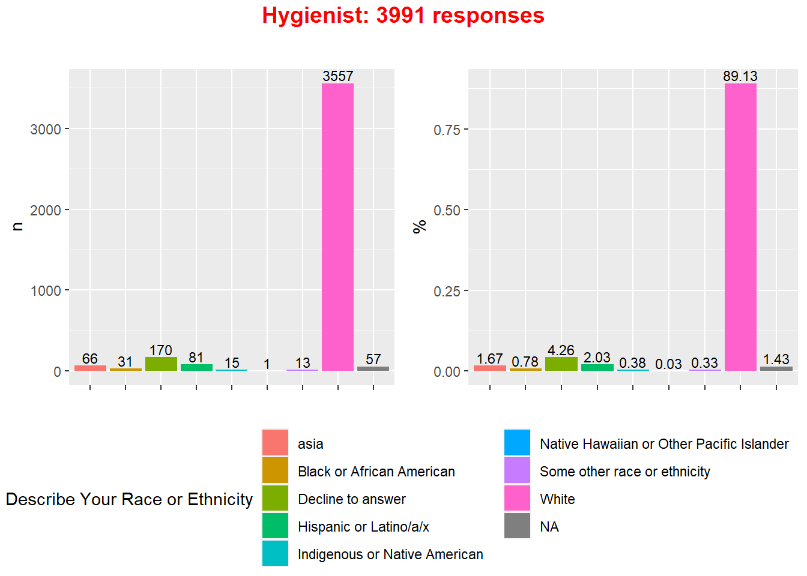
ggplot(race_new, aes(x=`Describe Your Race or Ethnicity`, y=prop, fill=`Describe Your Race or Ethnicity`)) +geom_bar(position = "dodge", stat="identity")+
# ylim(c(0, 0.7))+
ylab("%")+xlab("")+
theme(legend.position="")+
theme(axis.text.x = element_text(angle = 30, vjust = 0.5, size=8))+
geom_text(aes(label=race_new$prop*100), position=position_dodge(width=0.9), vjust=-0.25, size=3)+ # add numbers over bars
ggtitle("Hygienist ")+
theme(plot.title = element_text(hjust = 0.5, size=15)) #center the title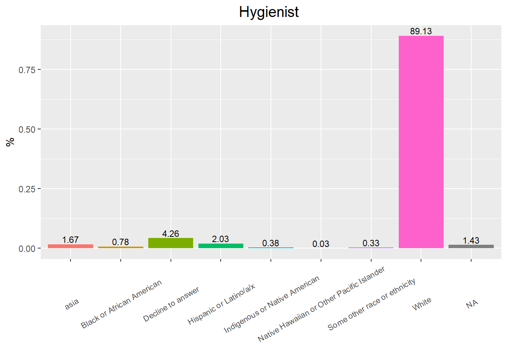
race_new%>%
datatable(extensions = 'Buttons',
caption = "",
options = list(dom = 'Blfrtip',
buttons = c('copy', 'csv', 'excel', 'pdf', 'print'),
lengthMenu = list(c(10,25,50,-1),
c(10,25,50,"All"))))asiaincludes “East Asian”, “Filipino”, “Hmong”, “Laotian”, “South Asian”
Gender Identity
gender=Dental_Hygienist$`Dental H` %>% dplyr::count(`Gender Identity`) %>% mutate(prop=round(n/nrow(Dental_Hygienist$`Dental H`),4))
ggplot(gender, aes(x=`Gender Identity`, y=n, fill=`Gender Identity`)) +geom_bar(position = "dodge", stat="identity")+
# ylim(c(0, 0.7))+
ylab("n")+xlab("")+
theme(legend.position="")+
theme(axis.text.x = element_text(angle = 30, vjust = 0.5, size=13))+
geom_text(aes(label=gender$n), position=position_dodge(width=0.9), vjust=-0.25, size=3)+ # add numbers over bars
ggtitle("Hygienist ")+
theme(plot.title = element_text(hjust = 0.5, size=15)) #center the title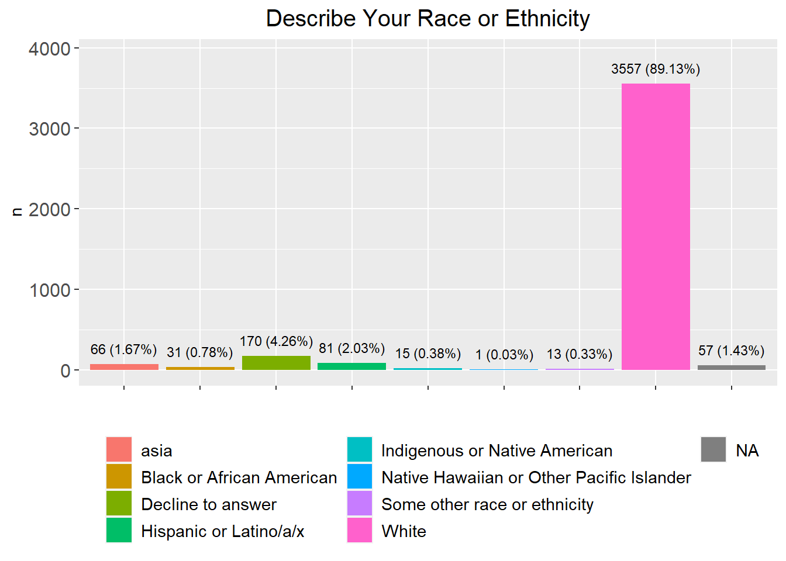
| Version | Author | Date |
|---|---|---|
| d2b6989 | han | 2024-08-07 |
ggplot(gender, aes(x=`Gender Identity`, y=prop, fill=`Gender Identity`)) +geom_bar(position = "dodge", stat="identity")+
# ylim(c(0, 0.7))+
ylab("%")+xlab("")+
theme(legend.position="")+
theme(axis.text.x = element_text(angle = 30, vjust = 0.5, size=13))+
geom_text(aes(label=gender$prop*100), position=position_dodge(width=0.9), vjust=-0.25, size=3)+ # add numbers over bars
ggtitle("Hygienist ")+
theme(plot.title = element_text(hjust = 0.5, size=15)) #center the title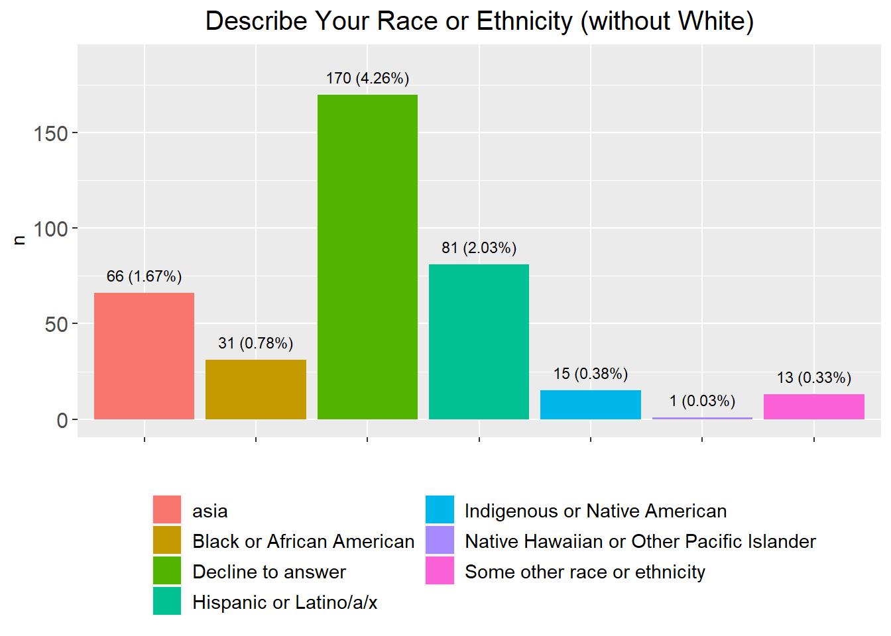
| Version | Author | Date |
|---|---|---|
| d2b6989 | han | 2024-08-07 |
gender%>%
datatable(extensions = 'Buttons',
caption = "",
options = list(dom = 'Blfrtip',
buttons = c('copy', 'csv', 'excel', 'pdf', 'print'),
lengthMenu = list(c(10,25,50,-1),
c(10,25,50,"All"))))Dentist Survey
#dim(Dentist_Survey$`Dentist Survey`)
variables=colnames(Dentist_Survey$`Dentist Survey`)
data.frame(questions=variables)%>%
datatable(extensions = 'Buttons',
caption = "",
options = list(dom = 'Blfrtip',
buttons = c('copy', 'csv', 'excel', 'pdf', 'print'),
lengthMenu = list(c(10,25,50,-1),
c(10,25,50,"All"))))- in total 2957 responses and 40 questions
Race or Ethnicity
race=Dentist_Survey$`Dentist Survey` %>% dplyr::count(`Describe Your Race or Ethnicity`) %>% mutate(prop=round(n/nrow(Dentist_Survey$`Dentist Survey`),4))
asia=c("East Asian", "Filipino", "Hmong", "Laotian", "South Asian") # define south east asia countries
asia_race= race %>% filter(`Describe Your Race or Ethnicity` %in% asia)
race_new=race %>% filter(`Describe Your Race or Ethnicity` %in% asia==F) %>% add_row(`Describe Your Race or Ethnicity`="asia", n=asia_race %>% select(n) %>% sum(), prop=asia_race %>% select(prop) %>% sum()) # combine south east asia countries into one unit
race_new2=race_new %>% filter(n>10) %>% add_row(`Describe Your Race or Ethnicity`="other", n=race_new %>% filter(n<=10) %>% select(n) %>% sum(), prop=race_new %>% filter(n<=10) %>% select(prop) %>% sum()) # aggregate categories with n<=10
ggplot(race_new2, aes(x=`Describe Your Race or Ethnicity`, y=n, fill=`Describe Your Race or Ethnicity`)) +geom_bar(position = "dodge", stat="identity")+
# ylim(c(0, 0.7))+
ylab("n")+xlab("")+
theme(legend.position="")+
theme(axis.text.x = element_text(angle = 30, vjust = 0.5, size=8))+
geom_text(aes(label=race_new2$n), position=position_dodge(width=0.9), vjust=-0.25, size=3)+ # add numbers over bars
ggtitle("Dentist ")+
theme(plot.title = element_text(hjust = 0.5, size=15)) #center the title
ggplot(race_new2, aes(x=`Describe Your Race or Ethnicity`, y=prop, fill=`Describe Your Race or Ethnicity`)) +geom_bar(position = "dodge", stat="identity")+
# ylim(c(0, 0.7))+
ylab("%")+xlab("")+
theme(legend.position="")+
theme(axis.text.x = element_text(angle = 30, vjust = 0.5, size=8))+
geom_text(aes(label=race_new2$prop*100), position=position_dodge(width=0.9), vjust=-0.25, size=3)+ # add numbers over bars
ggtitle("Dentist ")+
theme(plot.title = element_text(hjust = 0.5, size=15)) #center the title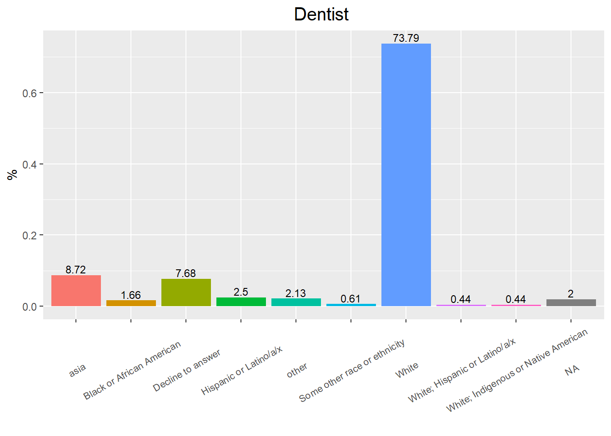
race_new2%>%
datatable(extensions = 'Buttons',
caption = "",
options = list(dom = 'Blfrtip',
buttons = c('copy', 'csv', 'excel', 'pdf', 'print'),
lengthMenu = list(c(10,25,50,-1),
c(10,25,50,"All"))))asiaincludes “East Asian”, “Filipino”, “Hmong”, “Laotian”, “South Asian”otheraggregates categories with less than 10 responses.
Gender Identity
gender=Dentist_Survey$`Dentist Survey` %>% dplyr::count(`Gender Identity`) %>% mutate(prop=round(n/nrow(Dentist_Survey$`Dentist Survey`),4))
ggplot(gender, aes(x=`Gender Identity`, y=n, fill=`Gender Identity`)) +geom_bar(position = "dodge", stat="identity")+
# ylim(c(0, 0.7))+
ylab("n")+xlab("")+
theme(legend.position="")+
theme(axis.text.x = element_text(angle = 30, vjust = 0.5, size=13))+
geom_text(aes(label=gender$n), position=position_dodge(width=0.9), vjust=-0.25, size=3)+ # add numbers over bars
ggtitle("Dentist ")+
theme(plot.title = element_text(hjust = 0.5, size=15)) #center the title
| Version | Author | Date |
|---|---|---|
| d2b6989 | han | 2024-08-07 |
ggplot(gender, aes(x=`Gender Identity`, y=prop, fill=`Gender Identity`)) +geom_bar(position = "dodge", stat="identity")+
# ylim(c(0, 0.7))+
ylab("%")+xlab("")+
theme(legend.position="")+
theme(axis.text.x = element_text(angle = 30, vjust = 0.5, size=13))+
geom_text(aes(label=gender$prop*100), position=position_dodge(width=0.9), vjust=-0.25, size=3)+ # add numbers over bars
ggtitle("Dentist ")+
theme(plot.title = element_text(hjust = 0.5, size=15)) #center the title
gender%>%
datatable(extensions = 'Buttons',
caption = "",
options = list(dom = 'Blfrtip',
buttons = c('copy', 'csv', 'excel', 'pdf', 'print'),
lengthMenu = list(c(10,25,50,-1),
c(10,25,50,"All"))))Dental Specialties Board Certified
specialty=Dentist_Survey$`Dentist Survey` %>% dplyr::count(`Dental Specialties Board Certified`) %>% mutate(prop=round(n/nrow(Dentist_Survey$`Dentist Survey`),4))
specialty2=specialty %>% filter(n>10) %>% add_row(`Dental Specialties Board Certified`="other", n=specialty %>% filter(n<=10) %>% select(n) %>% sum(), prop=specialty %>% filter(n<=10) %>% select(prop) %>% sum()) # aggregate categories with n<=10
ggplot(specialty2, aes(x=`Dental Specialties Board Certified`, y=n, fill=`Dental Specialties Board Certified`)) +geom_bar(position = "dodge", stat="identity")+
# ylim(c(0, 0.7))+
ylab("n")+xlab("")+
theme(legend.position="")+
theme(axis.text.x = element_text(angle = 30, vjust = 0.5, size=13))+
geom_text(aes(label=specialty2$n), position=position_dodge(width=0.9), vjust=-0.25, size=3)+ # add numbers over bars
ggtitle("Dentist ")+
theme(plot.title = element_text(hjust = 0.5, size=15)) #center the title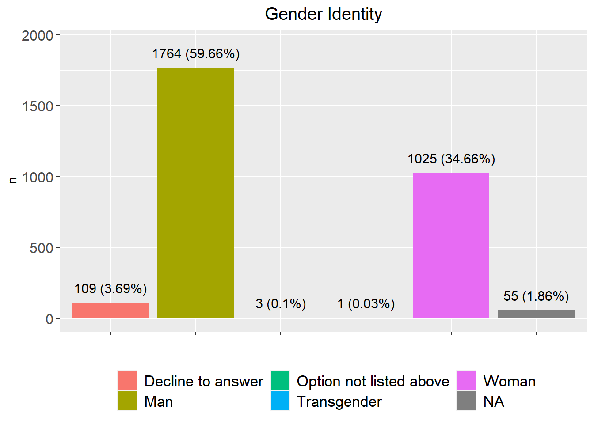
| Version | Author | Date |
|---|---|---|
| f8cddd0 | han | 2024-08-09 |
ggplot(specialty2, aes(x=`Dental Specialties Board Certified`, y=prop, fill=`Dental Specialties Board Certified`)) +geom_bar(position = "dodge", stat="identity")+
# ylim(c(0, 0.7))+
ylab("%")+xlab("")+
theme(legend.position="")+
theme(axis.text.x = element_text(angle = 30, vjust = 0.5, size=13))+
geom_text(aes(label=specialty2$prop*100), position=position_dodge(width=0.9), vjust=-0.25, size=3)+ # add numbers over bars
ggtitle("Dentist ")+
theme(plot.title = element_text(hjust = 0.5, size=15)) #center the title
| Version | Author | Date |
|---|---|---|
| f8cddd0 | han | 2024-08-09 |
specialty2%>%
datatable(extensions = 'Buttons',
caption = "",
options = list(dom = 'Blfrtip',
buttons = c('copy', 'csv', 'excel', 'pdf', 'print'),
lengthMenu = list(c(10,25,50,-1),
c(10,25,50,"All"))))otheraggregates categories with less than 10 responses, such asGeneral dentistry; Oral surgery
geographical distribution
wisconsin_urban_rural_zip=multiplesheets("C:\\Shengtong\\Research\\OralPublicHealth\\Dental_Emergency_visit\\Wisconsin-Urban-Rural-zip.xlsx")region_code=unique(wisconsin_urban_rural_zip$`Table 1`$`2014 ZCTA-based WURC Code`)
all_code=wisconsin_urban_rural_zip$`Table 1`$`2014 ZCTA-based WURC Code`
all_code[which(all_code=="R2/R1")]="R2" # raname regions
all_code[which(all_code=="Urban/R1")]="Urban"
all_code[which(all_code=="Metro W-O-W/R1")]="Metro W-O-W"
all_code[which(all_code=="R3/R1")]="R3"
all_code[which(all_code=="R3/R2/R1")]="R3"
all_code[which(all_code=="Urban/R2")]="Urban"
all_code[which(all_code=="R1/Urban")]="R1"
wisconsin_urban_rural_zip_data=wisconsin_urban_rural_zip$`Table 1` %>% mutate(new_region_code=all_code)
region_code_update=unique(all_code)region_code_zip=sapply(region_code_update, function(x) wisconsin_urban_rural_zip_data %>% filter(new_region_code==x) %>% select(`ZCTA/\r\nZIPCode`)) # extract zip codes Gender Identity
gender_geo=sapply(region_code_zip, function(x) Dental_Hygienist$`Dental H` %>% filter(`5-digit Zip code` %in% x) %>% select(`Gender Identity`))
gender_prop=sapply(gender_geo, function(x) c(sum(x=="Man", na.rm = T), sum(x=="Woman", na.rm = T)))
gender_geo_data=data.frame(geo=rep(region_code_update,each=2), num=as.vector(gender_prop), gender=rep(c("Man", "Woman"), length(region_code_update))) %>% drop_na()
ggplot(gender_geo_data, aes(x=geo, y=num, fill=gender)) +geom_bar(position = "dodge", stat="identity")+
# ylim(c(0, 0.7))+
ylab("n")+xlab("")+
theme(legend.position="bottom")+
theme(axis.text.x = element_text(angle = 0, vjust = 0.5, size=10))+
geom_text(aes(label=num), position=position_dodge(width=0.9), vjust=-0.25, size=3)+ # add numbers over bars
ggtitle("Hygienist ")+
theme(plot.title = element_text(hjust = 0.5, size=15)) #center the title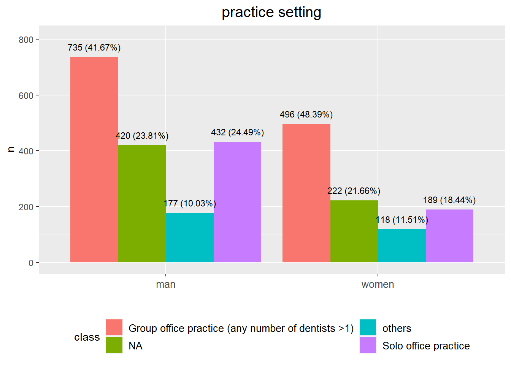
gender_geo_data%>%
datatable(extensions = 'Buttons',
caption = "",
options = list(dom = 'Blfrtip',
buttons = c('copy', 'csv', 'excel', 'pdf', 'print'),
lengthMenu = list(c(10,25,50,-1),
c(10,25,50,"All"))))- only keep
ManandWomanand ignore other responses
gender_geo=sapply(region_code_zip, function(x) Dentist_Survey$`Dentist Survey` %>% filter(`5-digit Zip code` %in% x) %>% select(`Gender Identity`))
gender_prop=sapply(gender_geo, function(x) c(sum(x=="Man", na.rm=T), sum(x=="Woman", na.rm=T)))
gender_geo_data=data.frame(geo=rep(region_code_update,each=2), num=as.vector(gender_prop), gender=rep(c("Man", "Woman"), length(region_code_update))) %>% drop_na()
ggplot(gender_geo_data, aes(x=geo, y=num, fill=gender)) +geom_bar(position = "dodge", stat="identity")+
# ylim(c(0, 0.7))+
ylab("n")+xlab("")+
theme(legend.position="bottom")+
theme(axis.text.x = element_text(angle = 0, vjust = 0.5, size=10))+
geom_text(aes(label=num), position=position_dodge(width=0.9), vjust=-0.25, size=3)+ # add numbers over bars
ggtitle("Dentist_Survey")+
theme(plot.title = element_text(hjust = 0.5, size=15)) #center the title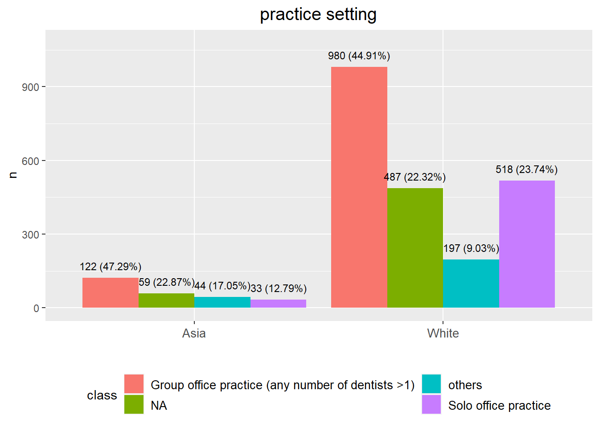
gender_geo_data%>%
datatable(extensions = 'Buttons',
caption = "",
options = list(dom = 'Blfrtip',
buttons = c('copy', 'csv', 'excel', 'pdf', 'print'),
lengthMenu = list(c(10,25,50,-1),
c(10,25,50,"All"))))specialty distribution
specialty=c("General dentistry", "Endodontics", "Orthodontics", "Periodontics", "Prosthodontics", "Pediatric dentistry", "Oral surgery")
specialty_geo=sapply(region_code_zip, function(x) Dentist_Survey$`Dentist Survey` %>% filter(`5-digit Zip code` %in% x) %>% filter(`Dental Specialties Board Certified` %in% specialty) %>% select(`Dental Specialties Board Certified`))
specialty_prop=sapply(specialty_geo, function(x) c(sum(x=="General dentistry"), sum(x=="Endodontics"), sum(x=="Orthodontics"), sum(x=="Periodontics"), sum(x=="Prosthodontics"), sum(x=="Pediatric dentistry"), sum(x=="Oral surgery")))
specialty_geo_data=data.frame(geo=rep(region_code_update,each=length(specialty)), num=as.vector(specialty_prop), spect=rep(specialty, length(region_code_update))) %>% drop_na()
figures=list()
pie_chart=list()
for (i in 1:length(region_code_update))
{
figures[[i]]=ggplot(specialty_geo_data %>% filter(geo %in% region_code_update[i]), aes(x=spect, y=num, fill=spect)) +geom_bar(position = "dodge", stat="identity")+
ylim(c(0, max(specialty_geo_data %>% filter(geo %in% region_code_update[i]) %>% select(num)%>% pull())+10))+
facet_grid("geo")+
ylab("n")+xlab("")+
theme(legend.position="")+
theme(axis.text.x = element_text(angle = 30, vjust = 0.5, size=10))+
geom_text(aes(label=num), position=position_dodge(width=0.9), vjust=-0.25, size=3)+ # add numbers over bars
ggtitle("Dentist_Survey")+
theme(plot.title = element_text(hjust = 0.5, size=15)) #center the title
pie_data=specialty_geo_data %>% filter(geo %in% region_code_update[i])
pie_data <- pie_data %>%
mutate(per=`num`/sum(`num`)) %>%
arrange(desc(spect))
pie_data$label <- scales::percent(pie_data$per)
pie_chart[[i]]=ggplot(data=pie_data)+
geom_bar(aes(x="", y=per, fill=spect), stat="identity", width = 1)+
coord_polar("y", start=0)+
theme_void()+
geom_text(aes(x=1, y = cumsum(per) - per/2, label=label))
}
ggarrange(figures[[1]], figures[[2]], figures[[3]], figures[[4]], figures[[5]], figures[[6]], ncol=2)$`1`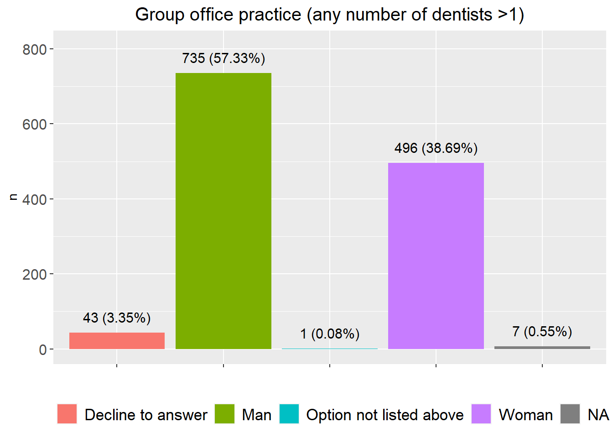
$`2`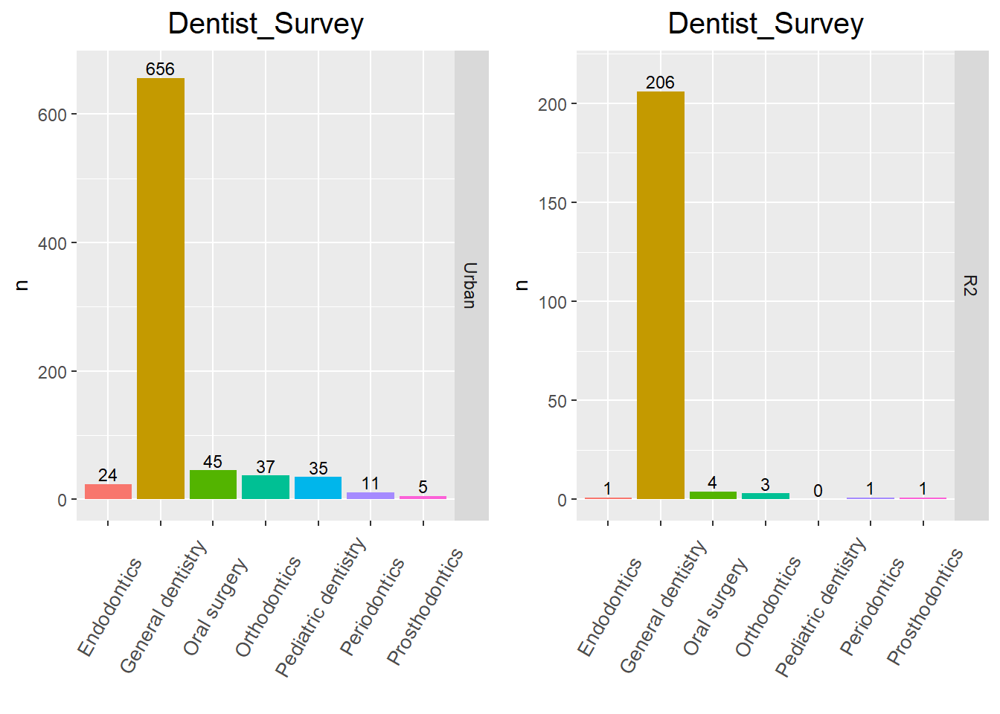
$`3`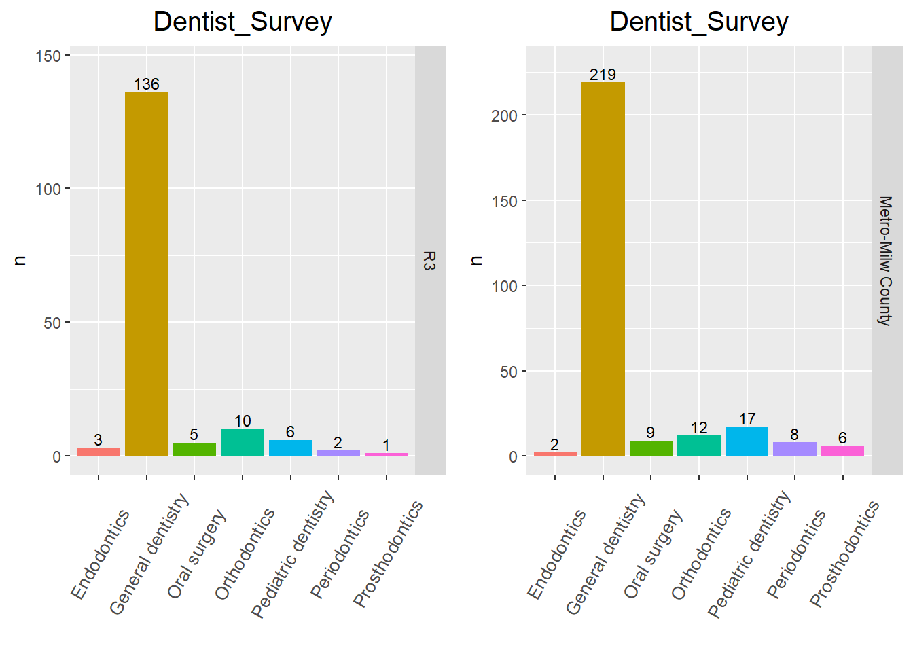
attr(,"class")
[1] "list" "ggarrange"gender_geo_data%>%
datatable(extensions = 'Buttons',
caption = "",
options = list(dom = 'Blfrtip',
buttons = c('copy', 'csv', 'excel', 'pdf', 'print'),
lengthMenu = list(c(10,25,50,-1),
c(10,25,50,"All"))))
sessionInfo()R version 4.3.2 (2023-10-31 ucrt)
Platform: x86_64-w64-mingw32/x64 (64-bit)
Running under: Windows 10 x64 (build 19045)
Matrix products: default
locale:
[1] LC_COLLATE=English_United States.utf8
[2] LC_CTYPE=English_United States.utf8
[3] LC_MONETARY=English_United States.utf8
[4] LC_NUMERIC=C
[5] LC_TIME=English_United States.utf8
time zone: America/Chicago
tzcode source: internal
attached base packages:
[1] grid stats graphics grDevices utils datasets methods
[8] base
other attached packages:
[1] VennDiagram_1.7.3 futile.logger_1.4.3 condsurv_1.0.0
[4] devtools_2.4.5 usethis_2.2.2 tidycmprsk_1.0.0
[7] gtsummary_1.7.2 ggsurvfit_1.0.0 irr_0.84.1
[10] lpSolve_5.6.20 readxl_1.4.3 cowplot_1.1.2
[13] matrixStats_1.2.0 gridExtra_2.3 DT_0.31
[16] rstatix_0.7.2 ggpubr_0.6.0 kableExtra_1.3.4
[19] lubridate_1.9.3 forcats_1.0.0 stringr_1.5.1
[22] dplyr_1.1.4 purrr_1.0.2 readr_2.1.4
[25] tidyr_1.3.0 tibble_3.2.1 ggplot2_3.4.4
[28] tidyverse_2.0.0
loaded via a namespace (and not attached):
[1] formatR_1.14 remotes_2.4.2.1 rlang_1.1.2
[4] magrittr_2.0.3 git2r_0.33.0 compiler_4.3.2
[7] systemfonts_1.0.5 vctrs_0.6.5 rvest_1.0.3
[10] profvis_0.3.8 pkgconfig_2.0.3 fastmap_1.1.1
[13] backports_1.4.1 ellipsis_0.3.2 labeling_0.4.3
[16] utf8_1.2.4 promises_1.2.1 rmarkdown_2.25
[19] sessioninfo_1.2.2 tzdb_0.4.0 xfun_0.41
[22] cachem_1.0.8 jsonlite_1.8.8 highr_0.10
[25] later_1.3.2 broom_1.0.5 R6_2.5.1
[28] bslib_0.6.1 stringi_1.8.3 car_3.1-2
[31] pkgload_1.3.3 jquerylib_0.1.4 cellranger_1.1.0
[34] Rcpp_1.0.11 knitr_1.45 httpuv_1.6.13
[37] Matrix_1.6-1.1 splines_4.3.2 timechange_0.2.0
[40] tidyselect_1.2.0 rstudioapi_0.15.0 abind_1.4-5
[43] yaml_2.3.8 miniUI_0.1.1.1 pkgbuild_1.4.3
[46] lattice_0.21-9 shiny_1.8.0 withr_2.5.2
[49] evaluate_0.23 lambda.r_1.2.4 survival_3.5-7
[52] urlchecker_1.0.1 xml2_1.3.6 pillar_1.9.0
[55] carData_3.0-5 whisker_0.4.1 generics_0.1.3
[58] rprojroot_2.0.4 hms_1.1.3 munsell_0.5.0
[61] scales_1.3.0 xtable_1.8-4 glue_1.6.2
[64] tools_4.3.2 webshot_0.5.5 ggsignif_0.6.4
[67] fs_1.6.3 crosstalk_1.2.1 colorspace_2.1-0
[70] cli_3.6.2 workflowr_1.7.1 futile.options_1.0.1
[73] fansi_1.0.6 broom.helpers_1.14.0 viridisLite_0.4.2
[76] svglite_2.1.3 gt_0.10.0 gtable_0.3.4
[79] sass_0.4.8 digest_0.6.33 farver_2.1.1
[82] htmlwidgets_1.6.4 memoise_2.0.1 htmltools_0.5.7
[85] lifecycle_1.0.4 httr_1.4.7 mime_0.12